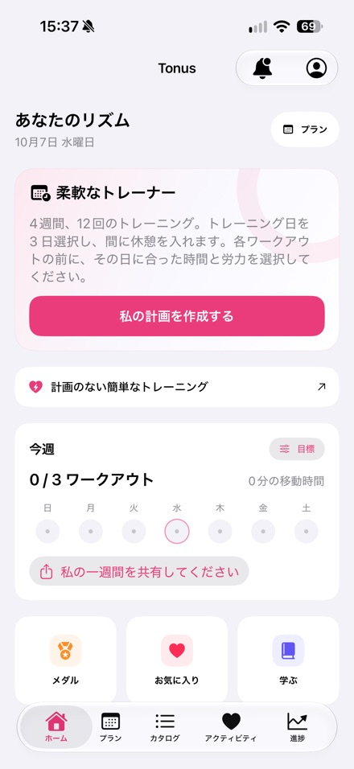
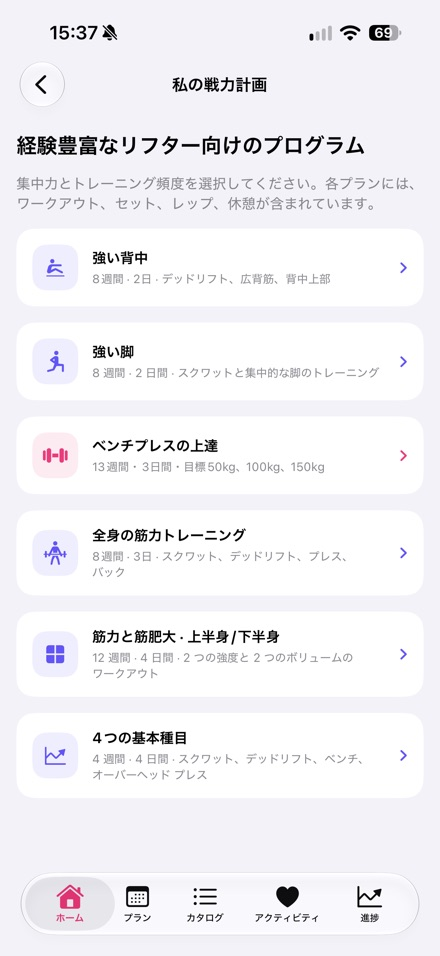
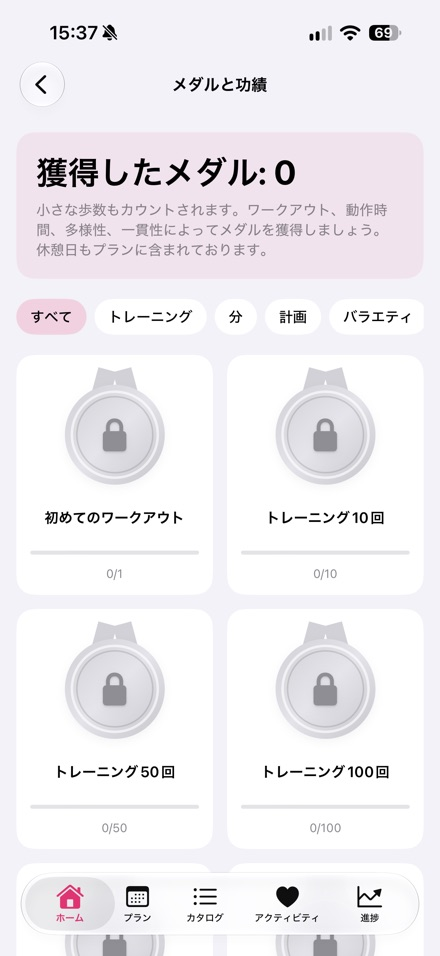

Tonus開発者Nikita Revinによる記事。App Storeで公開中のバージョン1.4に合わせて2026年10月16日に更新。
TonusはiPhone向けの無料トレーニングアプリです。短時間の自宅トレーニング、予定に合わせたプラン、6種類のジムプログラムを利用できます。アカウント登録やサブスクリプションは不要です。
プレスキット
公開版のアプリ情報、アイコン、スクリーンショット3枚をダウンロードできます。
プレスキットをダウンロード (.zip)Tonus 1.4
- iOS 17以降のiPhoneに対応
- 無料、登録不要、サブスクリプションやアプリ内課金なし
- 自宅で5・10・20分。ジャンプなし、立ったまま、器具なしの選択肢
- 選択した曜日で12回のトレーニング。できなかった回は次の予定日へ移動
- 6種類のジムプログラム、フォームの説明、タイマー、進捗記録
- Appleヘルスケアの連携は任意。履歴とヘルスケアデータは端末内に保存
- プランと文章の説明はオフラインで利用可能。オンライン動画には通信が必要
- 60種目の動画。外部動画サービスでは広告が表示される場合があります
- 日本語インターフェースに対応
App Storeで公開中のバージョン1.4の画面



レビューに関するお問い合わせ
Nikita Revin · nik007rev@gmail.com
Tonusは医療サービスではありません。痛みや体調不良を感じたら中止してください。健康上の制限がある場合は、資格のある専門家に相談してください。
Tonusをダウンロード